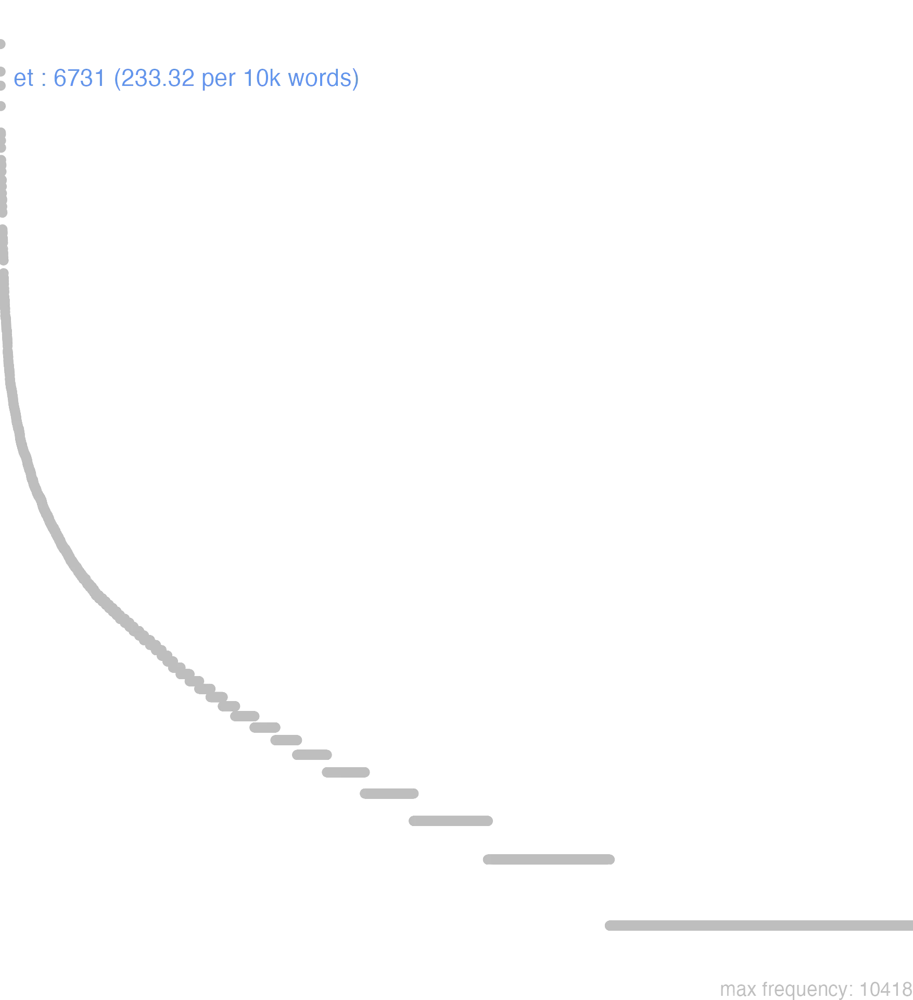

52 et
52.0.0.1 bases lexicais
id: http://lila-erc.eu/data/id/lemma/101542
classe: conjunção coordenativa
paradigma: indeclinável
outras grafias: e, ed, es, id
variantes do lema:
no data
ĕt
no data
52.0.0.2 dicionários tradicionais
1 et
conj.
Obs.: A conj. et pode repetir-se uma ou mais vezes para indicar uma conexão especial entre os termos ou frases que une.
conj.
Obs.: A conj. et pode repetir-se uma ou mais vezes para indicar uma conexão especial entre os termos ou frases que une.
1 I-Sent. próprio E Cíc. Of. 2, 57.
2 II-Daí E também, e além disso, e até Cíc. Verr. 5, 121.
3 II-Com valor temporal: E então, e depois Verg. En. 6. 498.
no data
Et
conjunç.
conjunç.
1 Cic. e, tambem.
Et
Conjunct.
Conjunct.
1 e
Et
coniunctio.
coniunctio.
1 tambem
52.0.0.3 dados de corpus
![This chart plots collocate by scoreSUBST, for the headword et here are all the values plotted: collocate: dico; scoreSUBST: 0. collocate: magnus; scoreSUBST: 0. collocate: uenio; scoreSUBST: 0. collocate: bonus; scoreSUBST: 0. collocate: fortis; scoreSUBST: 0. collocate: animus; scoreSUBST: 1. collocate: nam; scoreSUBST: 0. collocate: uis; scoreSUBST: 2. collocate: grauis; scoreSUBST: 0. collocate: simul; scoreSUBST: 0. collocate: auctoritas; scoreSUBST: 2. collocate: ceterus; scoreSUBST: 0. collocate: statim; scoreSUBST: 0. collocate: clarus; scoreSUBST: 0. collocate: aio; scoreSUBST: 0. collocate: corpus; scoreSUBST: 1. collocate: mos; scoreSUBST: 2. collocate: studium; scoreSUBST: 1. collocate: laus; scoreSUBST: 2. collocate: cogito; scoreSUBST: 0. collocate: cognosco; scoreSUBST: 0. collocate: constituo; scoreSUBST: 0. collocate: furor; scoreSUBST: 2. collocate: ea; scoreSUBST: 0. collocate: ignis; scoreSUBST: 2. collocate: exeo; scoreSUBST: 0. collocate: rogo; scoreSUBST: 0. collocate: religio; scoreSUBST: 1. collocate: amo; scoreSUBST: 0. collocate: ingenium; scoreSUBST: 1. collocate: erectus; scoreSUBST: 0. collocate: laelius; scoreSUBST: 0. collocate: locuples; scoreSUBST: 0. collocate: Fannius; scoreSUBST: 0. collocate: cottidianus; scoreSUBST: 0. collocate: uiginti; scoreSUBST: 0. collocate: praecipio; scoreSUBST: 0. collocate: uarius; scoreSUBST: 0. collocate: misericordia; scoreSUBST: 2. collocate: protinus; scoreSUBST: 0. collocate: diligentia; scoreSUBST: 2. collocate: sapiens2; scoreSUBST: 0. collocate: mansuetudo; scoreSUBST: 2. collocate: aeger; scoreSUBST: 0. collocate: nubes; scoreSUBST: 2. collocate: affligo; scoreSUBST: 0. collocate: gemitus; scoreSUBST: 2. collocate: inconstantia; scoreSUBST: 2. collocate: trux; scoreSUBST: 0. collocate: exsulto; scoreSUBST: 0. collocate: strepitus; scoreSUBST: 2. collocate: Flaccus; scoreSUBST: 0. collocate: angustus; scoreSUBST: 0. collocate: blandus; scoreSUBST: 0. collocate: circumdo; scoreSUBST: 0. collocate: modestia; scoreSUBST: 2. collocate: pecus2; scoreSUBST: 2. collocate: constans; scoreSUBST: 0. collocate: alacer; scoreSUBST: 0. collocate: necessitudo; scoreSUBST: 2. collocate: coniunctio; scoreSUBST: 2. collocate: conquiro; scoreSUBST: 0. collocate: subicio; scoreSUBST: 0. collocate: Scaeuola; scoreSUBST: 0. collocate: uagus; scoreSUBST: 0](./Media/wordcloud__xx101-116xx__BY_collocate_scoreSUBST.webp)
![This chart plots collocate by scoreADJ, for the headword et here are all the values plotted: collocate: dico; scoreADJ: 0. collocate: magnus; scoreADJ: 2. collocate: uenio; scoreADJ: 0. collocate: bonus; scoreADJ: 2. collocate: fortis; scoreADJ: 3. collocate: animus; scoreADJ: 0. collocate: nam; scoreADJ: 0. collocate: uis; scoreADJ: 0. collocate: grauis; scoreADJ: 2. collocate: simul; scoreADJ: 0. collocate: auctoritas; scoreADJ: 0. collocate: ceterus; scoreADJ: 0. collocate: statim; scoreADJ: 0. collocate: clarus; scoreADJ: 2. collocate: aio; scoreADJ: 0. collocate: corpus; scoreADJ: 0. collocate: mos; scoreADJ: 0. collocate: studium; scoreADJ: 0. collocate: laus; scoreADJ: 0. collocate: cogito; scoreADJ: 0. collocate: cognosco; scoreADJ: 0. collocate: constituo; scoreADJ: 0. collocate: furor; scoreADJ: 0. collocate: ea; scoreADJ: 0. collocate: ignis; scoreADJ: 0. collocate: exeo; scoreADJ: 0. collocate: rogo; scoreADJ: 0. collocate: religio; scoreADJ: 0. collocate: amo; scoreADJ: 0. collocate: ingenium; scoreADJ: 0. collocate: erectus; scoreADJ: 2. collocate: laelius; scoreADJ: 2. collocate: locuples; scoreADJ: 2. collocate: Fannius; scoreADJ: 0. collocate: cottidianus; scoreADJ: 2. collocate: uiginti; scoreADJ: 0. collocate: praecipio; scoreADJ: 0. collocate: uarius; scoreADJ: 2. collocate: misericordia; scoreADJ: 0. collocate: protinus; scoreADJ: 0. collocate: diligentia; scoreADJ: 0. collocate: sapiens2; scoreADJ: 2. collocate: mansuetudo; scoreADJ: 0. collocate: aeger; scoreADJ: 2. collocate: nubes; scoreADJ: 0. collocate: affligo; scoreADJ: 0. collocate: gemitus; scoreADJ: 0. collocate: inconstantia; scoreADJ: 0. collocate: trux; scoreADJ: 2. collocate: exsulto; scoreADJ: 0. collocate: strepitus; scoreADJ: 0. collocate: Flaccus; scoreADJ: 0. collocate: angustus; scoreADJ: 2. collocate: blandus; scoreADJ: 2. collocate: circumdo; scoreADJ: 0. collocate: modestia; scoreADJ: 0. collocate: pecus2; scoreADJ: 0. collocate: constans; scoreADJ: 2. collocate: alacer; scoreADJ: 2. collocate: necessitudo; scoreADJ: 0. collocate: coniunctio; scoreADJ: 0. collocate: conquiro; scoreADJ: 0. collocate: subicio; scoreADJ: 0. collocate: Scaeuola; scoreADJ: 0. collocate: uagus; scoreADJ: 2](./Media/wordcloud__xx101-116xx__BY_collocate_scoreADJ.webp)
![This chart plots collocate by scoreVERBO, for the headword et here are all the values plotted: collocate: dico; scoreVERBO: 1. collocate: magnus; scoreVERBO: 0. collocate: uenio; scoreVERBO: 2. collocate: bonus; scoreVERBO: 0. collocate: fortis; scoreVERBO: 0. collocate: animus; scoreVERBO: 0. collocate: nam; scoreVERBO: 0. collocate: uis; scoreVERBO: 0. collocate: grauis; scoreVERBO: 0. collocate: simul; scoreVERBO: 0. collocate: auctoritas; scoreVERBO: 0. collocate: ceterus; scoreVERBO: 0. collocate: statim; scoreVERBO: 0. collocate: clarus; scoreVERBO: 0. collocate: aio; scoreVERBO: 2. collocate: corpus; scoreVERBO: 0. collocate: mos; scoreVERBO: 0. collocate: studium; scoreVERBO: 0. collocate: laus; scoreVERBO: 0. collocate: cogito; scoreVERBO: 1. collocate: cognosco; scoreVERBO: 1. collocate: constituo; scoreVERBO: 1. collocate: furor; scoreVERBO: 0. collocate: ea; scoreVERBO: 0. collocate: ignis; scoreVERBO: 0. collocate: exeo; scoreVERBO: 2. collocate: rogo; scoreVERBO: 1. collocate: religio; scoreVERBO: 0. collocate: amo; scoreVERBO: 1. collocate: ingenium; scoreVERBO: 0. collocate: erectus; scoreVERBO: 0. collocate: laelius; scoreVERBO: 0. collocate: locuples; scoreVERBO: 0. collocate: Fannius; scoreVERBO: 0. collocate: cottidianus; scoreVERBO: 0. collocate: uiginti; scoreVERBO: 0. collocate: praecipio; scoreVERBO: 2. collocate: uarius; scoreVERBO: 0. collocate: misericordia; scoreVERBO: 0. collocate: protinus; scoreVERBO: 0. collocate: diligentia; scoreVERBO: 0. collocate: sapiens2; scoreVERBO: 0. collocate: mansuetudo; scoreVERBO: 0. collocate: aeger; scoreVERBO: 0. collocate: nubes; scoreVERBO: 0. collocate: affligo; scoreVERBO: 2. collocate: gemitus; scoreVERBO: 0. collocate: inconstantia; scoreVERBO: 0. collocate: trux; scoreVERBO: 0. collocate: exsulto; scoreVERBO: 2. collocate: strepitus; scoreVERBO: 0. collocate: Flaccus; scoreVERBO: 0. collocate: angustus; scoreVERBO: 0. collocate: blandus; scoreVERBO: 0. collocate: circumdo; scoreVERBO: 2. collocate: modestia; scoreVERBO: 0. collocate: pecus2; scoreVERBO: 0. collocate: constans; scoreVERBO: 0. collocate: alacer; scoreVERBO: 0. collocate: necessitudo; scoreVERBO: 0. collocate: coniunctio; scoreVERBO: 0. collocate: conquiro; scoreVERBO: 2. collocate: subicio; scoreVERBO: 2. collocate: Scaeuola; scoreVERBO: 0. collocate: uagus; scoreVERBO: 0](./Media/wordcloud__xx101-116xx__BY_collocate_scoreVERBO.webp)
![This chart plots collocate by scoreADV, for the headword et here are all the values plotted: collocate: dico; scoreADV: 0. collocate: magnus; scoreADV: 0. collocate: uenio; scoreADV: 0. collocate: bonus; scoreADV: 0. collocate: fortis; scoreADV: 0. collocate: animus; scoreADV: 0. collocate: nam; scoreADV: 1. collocate: uis; scoreADV: 0. collocate: grauis; scoreADV: 0. collocate: simul; scoreADV: 2. collocate: auctoritas; scoreADV: 0. collocate: ceterus; scoreADV: 0. collocate: statim; scoreADV: 2. collocate: clarus; scoreADV: 0. collocate: aio; scoreADV: 0. collocate: corpus; scoreADV: 0. collocate: mos; scoreADV: 0. collocate: studium; scoreADV: 0. collocate: laus; scoreADV: 0. collocate: cogito; scoreADV: 0. collocate: cognosco; scoreADV: 0. collocate: constituo; scoreADV: 0. collocate: furor; scoreADV: 0. collocate: ea; scoreADV: 1. collocate: ignis; scoreADV: 0. collocate: exeo; scoreADV: 0. collocate: rogo; scoreADV: 0. collocate: religio; scoreADV: 0. collocate: amo; scoreADV: 0. collocate: ingenium; scoreADV: 0. collocate: erectus; scoreADV: 0. collocate: laelius; scoreADV: 0. collocate: locuples; scoreADV: 0. collocate: Fannius; scoreADV: 0. collocate: cottidianus; scoreADV: 0. collocate: uiginti; scoreADV: 0. collocate: praecipio; scoreADV: 0. collocate: uarius; scoreADV: 0. collocate: misericordia; scoreADV: 0. collocate: protinus; scoreADV: 2. collocate: diligentia; scoreADV: 0. collocate: sapiens2; scoreADV: 0. collocate: mansuetudo; scoreADV: 0. collocate: aeger; scoreADV: 0. collocate: nubes; scoreADV: 0. collocate: affligo; scoreADV: 0. collocate: gemitus; scoreADV: 0. collocate: inconstantia; scoreADV: 0. collocate: trux; scoreADV: 0. collocate: exsulto; scoreADV: 0. collocate: strepitus; scoreADV: 0. collocate: Flaccus; scoreADV: 0. collocate: angustus; scoreADV: 0. collocate: blandus; scoreADV: 0. collocate: circumdo; scoreADV: 0. collocate: modestia; scoreADV: 0. collocate: pecus2; scoreADV: 0. collocate: constans; scoreADV: 0. collocate: alacer; scoreADV: 0. collocate: necessitudo; scoreADV: 0. collocate: coniunctio; scoreADV: 0. collocate: conquiro; scoreADV: 0. collocate: subicio; scoreADV: 0. collocate: Scaeuola; scoreADV: 0. collocate: uagus; scoreADV: 0](./Media/wordcloud__xx101-116xx__BY_collocate_scoreADV.webp)
![This chart plots collocate by scoreFUNC, for the headword et here are all the values plotted: collocate: dico; scoreFUNC: 0. collocate: magnus; scoreFUNC: 0. collocate: uenio; scoreFUNC: 0. collocate: bonus; scoreFUNC: 0. collocate: fortis; scoreFUNC: 0. collocate: animus; scoreFUNC: 0. collocate: nam; scoreFUNC: 0. collocate: uis; scoreFUNC: 0. collocate: grauis; scoreFUNC: 0. collocate: simul; scoreFUNC: 0. collocate: auctoritas; scoreFUNC: 0. collocate: ceterus; scoreFUNC: 0. collocate: statim; scoreFUNC: 0. collocate: clarus; scoreFUNC: 0. collocate: aio; scoreFUNC: 0. collocate: corpus; scoreFUNC: 0. collocate: mos; scoreFUNC: 0. collocate: studium; scoreFUNC: 0. collocate: laus; scoreFUNC: 0. collocate: cogito; scoreFUNC: 0. collocate: cognosco; scoreFUNC: 0. collocate: constituo; scoreFUNC: 0. collocate: furor; scoreFUNC: 0. collocate: ea; scoreFUNC: 0. collocate: ignis; scoreFUNC: 0. collocate: exeo; scoreFUNC: 0. collocate: rogo; scoreFUNC: 0. collocate: religio; scoreFUNC: 0. collocate: amo; scoreFUNC: 0. collocate: ingenium; scoreFUNC: 0. collocate: erectus; scoreFUNC: 0. collocate: laelius; scoreFUNC: 0. collocate: locuples; scoreFUNC: 0. collocate: Fannius; scoreFUNC: 0. collocate: cottidianus; scoreFUNC: 0. collocate: uiginti; scoreFUNC: 0. collocate: praecipio; scoreFUNC: 0. collocate: uarius; scoreFUNC: 0. collocate: misericordia; scoreFUNC: 0. collocate: protinus; scoreFUNC: 0. collocate: diligentia; scoreFUNC: 0. collocate: sapiens2; scoreFUNC: 0. collocate: mansuetudo; scoreFUNC: 0. collocate: aeger; scoreFUNC: 0. collocate: nubes; scoreFUNC: 0. collocate: affligo; scoreFUNC: 0. collocate: gemitus; scoreFUNC: 0. collocate: inconstantia; scoreFUNC: 0. collocate: trux; scoreFUNC: 0. collocate: exsulto; scoreFUNC: 0. collocate: strepitus; scoreFUNC: 0. collocate: Flaccus; scoreFUNC: 0. collocate: angustus; scoreFUNC: 0. collocate: blandus; scoreFUNC: 0. collocate: circumdo; scoreFUNC: 0. collocate: modestia; scoreFUNC: 0. collocate: pecus2; scoreFUNC: 0. collocate: constans; scoreFUNC: 0. collocate: alacer; scoreFUNC: 0. collocate: necessitudo; scoreFUNC: 0. collocate: coniunctio; scoreFUNC: 0. collocate: conquiro; scoreFUNC: 0. collocate: subicio; scoreFUNC: 0. collocate: Scaeuola; scoreFUNC: 0. collocate: uagus; scoreFUNC: 0](./Media/wordcloud__xx101-116xx__BY_collocate_scoreFUNC.webp)
![This charts plots the frequency of lemma by author_Frequencies. The Hieronymus subcorpus registers the highest normalized frequency, with the value of 1175.02 and an absolute frequency of 523. The Tacitus subcorpus follows, with a normalized frequency of 322.69 and an absolute frequency of 94. the subcorpus with the least normalized frequency is Sallustius with the normalized value of 110.38 and an absolute freqeuncy of 119. here are all the values: subcorpus: Caesar ; normalized frequency: 564 ; absolute frequency: 213.007024699751. subcorpus: Cicero ; normalized frequency: 3308 ; absolute frequency: 206.075104034288. subcorpus: Horatius ; normalized frequency: 244 ; absolute frequency: 216.677026907024. subcorpus: Ovidius ; normalized frequency: 120 ; absolute frequency: 205.902539464653. subcorpus: Phaedrus ; normalized frequency: 102 ; absolute frequency: 154.850463033247. subcorpus: Sallustius ; normalized frequency: 119 ; absolute frequency: 110.379371115852. subcorpus: Seneca ; normalized frequency: 1470 ; absolute frequency: 274.350982624438. subcorpus: Suetonius ; normalized frequency: 26 ; absolute frequency: 286.659316427784. subcorpus: Tacitus ; normalized frequency: 94 ; absolute frequency: 322.691383453484. subcorpus: Vergilius ; normalized frequency: 161 ; absolute frequency: 310.810810810811. subcorpus: Hieronymus ; normalized frequency: 523 ; absolute frequency: 1175.01685014603](./Media/barchart__xx101-116xx__lemma_BY_author_Frequencies.webp)
![This charts plots the frequency of lemma by genre_Frequencies. The Prosa.ficcional subcorpus registers the highest normalized frequency, with the value of 1175.02 and an absolute frequency of 523. The Poesia.épica subcorpus follows, with a normalized frequency of 310.81 and an absolute frequency of 161. the subcorpus with the least normalized frequency is Poesia.didática with the normalized value of 178.13 and an absolute freqeuncy of 210. here are all the values: subcorpus: Prosa.histórica ; normalized frequency: 803 ; absolute frequency: 195.477007716838. subcorpus: Prosa.filosófica ; normalized frequency: 1677 ; absolute frequency: 276.272219568047. subcorpus: Prosa.oratória ; normalized frequency: 1960 ; absolute frequency: 188.184689831306. subcorpus: Prosa.epistolográfica ; normalized frequency: 871 ; absolute frequency: 230.795728556666. subcorpus: Poesia.lírica ; normalized frequency: 256 ; absolute frequency: 215.361319088079. subcorpus: Poesia.didática ; normalized frequency: 210 ; absolute frequency: 178.132157095598. subcorpus: Poesia.trágica ; normalized frequency: 270 ; absolute frequency: 234.53787352328. subcorpus: Poesia.épica ; normalized frequency: 161 ; absolute frequency: 310.810810810811. subcorpus: Prosa.ficcional ; normalized frequency: 523 ; absolute frequency: 1175.01685014603](./Media/barchart__xx101-116xx__lemma_BY_genre_Frequencies.webp)
![This charts plots the frequency of lemma by period_Frequencies. The IV.d.C. subcorpus registers the highest normalized frequency, with the value of 1175.02 and an absolute frequency of 523. The II.d.C. subcorpus follows, with a normalized frequency of 314.14 and an absolute frequency of 120. the subcorpus with the least normalized frequency is I.a.C. with the normalized value of 205.17 and an absolute freqeuncy of 4408. here are all the values: subcorpus: I.a.C. ; normalized frequency: 4408 ; absolute frequency: 205.166395159414. subcorpus: I.d.C. ; normalized frequency: 1680 ; absolute frequency: 256.998623221661. subcorpus: II.d.C. ; normalized frequency: 120 ; absolute frequency: 314.13612565445. subcorpus: IV.d.C. ; normalized frequency: 523 ; absolute frequency: 1175.01685014603](./Media/barchart__xx101-116xx__lemma_BY_period_Frequencies.webp)
et Priamum simul
Sen.Ag.794
E Príamo também. [JDD]
rogat et respondet
Hor.S.1.9.63
pergunta e responde. [JDD]
et ait illis
Vulg.Marc.1.38
E ele lhes disse. [JDD]
et statim vocavit illos
Vulg.Marc.1.20
E de imediato chamou-os [JDD]
et statim ille surrexit
Vulg.Marc.2.12
E imediatamente ele se levantou [JDD]
Dixerat , et flebant .
Ov.Met.1.367
Tinha dito e eles choravam. [JDD]
ferro et igne res geritur
Sen.Ep.7.4
A ação se leva a cabo a ferro e fogo. [JDD]
unde uenis et quo tendis
Hor.S.1.9.62
“De onde vens?” e “Para onde vais?” [JDD]
et eo amplius admirabantur dicentes
Vulg.Marc.7.37
e ficavam cada vez mais admirados, dizendo. [JDD]
Aeneas ait et fastigia suspicit urbis
Verg.A.1.438
Diz Enéias e contempla as cumeeiras da cidade. [JDD]
ita sum animo perculso et abiecto
Cic.Att.3.2
de tal modo estou com o espírito prostrado e abatido. [JDD]
et aliud cecidit in terram bonam
Vulg.Marc.4.8
E outra caiu em terra boa. [JDD]
amamur a fratre et a filia
Cic.Att.4.2.7
Somos amados por meu irmão e por minha filha. [JDD]
et exeuntes praedicabant ut paenitentiam agerent
Vulg.Marc.6.12
E saindo eles, pregavam que se arrependessem. [JDD]
Venit ecce dives et potens :
Phaed.3.5
Aí vem vindo um homem rico e poderoso. [JDD]
et exiens vidit multam turbam Iesus
Vulg.Marc.6.34
E, ao sair, viu Jesus a multidão [JDD]
et statim dicunt ei de illa
Vulg.Marc.1.30
e logo lhe falam dela. [JDD]
magno enim strepitu et tumultu uenit
Sen.Ep.14.4
pois vem com grande estrépito e tumulto. [JDD]
ceteris prae se fert et ostentat
Cic.Att.2.23.3
perante os outros mostra e ostenta. [JDD]
Magnis clamoribus adflictus conticuit et concidit
Cic.Att.1.16.10
Acabrunhado por grandes gritarias, calou-se e se sentou. [JDD]
Quantum decoris corpore et vultu geris !
Phaed.1.13
Que grande formosura trazes no corpo e no rosto! [JDD]
et cum audissent sui exierunt tenere eum
Vulg.Marc.3.21
E quando os seus ouviram isso, saíram para o deter. [JDD]
conantes dicere prohibuit et in catenas coniecit
Caes.Gal.1.47.6
Impediu-os de tentar falar e colocou-os em correntes. [JDD]
maxima est enim uis uetustatis et consuetudinis
Cic.Amici.68
pois é muito grande a força da antiguidade e do costume. [JDD]
et viderunt eos abeuntes et cognoverunt multi
Vulg.Marc.6.33
E muitos os viram indo e os reconheceram. [JDD]
equi fortis et uictoris senectuti comparat suam
Cic.Sen.14
Ele compara a sua com a velhice de um cavalo forte e vitorioso. [JDD]
id est maximum et miserrimum mearum omnium miseriarum
Cic.Att.3.7.3
Essa é a maior e mais desgraçada de todas as minhas desgraças. [JDD]
sermonem tuum et Pompei cognovi ex tuis litteris
Cic.Att.3.8.3
Soube por tua carta de tua conversa com Pompeu. [JDD]
laedere gaudes inquit et hoc studio prauus facis
Hor.S.1.4.78
“Gostas de ofender”, diz, “e, maldoso, fazes isso intencionalmente. [JDD, de outra edição]
remeasse laetor uulnus et regni graue lugere cogor
Sen.Ag.580
Fico alegre de que tenha voltado: mas sou obrigada a chorar a grave ferida do reino. [JDD, de outra edição]
hoc animadversum Graecorum laude et multo sermone celebratur
Cic.Att.5.10.2
Isso foi observado com louvor dos gregos e é comentado em muita conversa. [JDD]
et sensit corpore quod sanata esset a plaga
Vulg.Marc.5.29
e ela sentiu no corpo que estava curada da enfermidade. [JDD]
Nam et medium quoddam officium dicitur et perfectum
Cic.Off.1.8
Pois um dever é dito médio e outro, perfeito. [JDD]
et ferrum et ignis saepe medicinae loco est
Sen.Ag.152
Tanto o ferro como o fogo muitas vezes estão frequentemente no lugar da medicina. [JDD]
hunc murus circumdatus arcem efficit et cum oppido coniungit
Caes.Gal.1.38.6
Um muro em torno faz dessa montanha uma cidadela e a une com a cidade. [JDD]
id uero iudices etiam dubitandum et diutius cogitandum est
Cic.Mil.53
Mas isso, juízes, deve ser ainda posto em dúvida e cogitado por mais tempo? [JDD]
cura ut valeas et ut sciam quando cogites Romam
Cic.Att.5.20.9
Cuida para que fiques bem e para que eu saiba quando pensas ir para Roma. [JDD]
tum ostendi tabellas Lentulo et quaesiui cognosceret ne signum
Cic.Catil.3.10.17
Mostrei então as tabuinhas a Lêntulo e perguntei se ele reconhecia o sinete. [JDD]
at ex bono uiro credo audieras et bono auctore
Cic.Ver.2.4.102.1
102 Mas tinhas ouvido, creio, de um homem de bem e com a autoridade de um homem de bem. [JDD]
est consul φιλόπατρις et ut semper iudicavi natura bonus
Cic.Att.2.1.4
Ele é um cônsul patriota e, como sempre julguei, bom por natureza. [JDD]
et cetera magno cum fremitu et clamore sunt dicta
Cic.Att.2.19.3
e demais coisas foram ditas com grande frêmito e clamor. [JDD]
rem haud sane difficilem Scipio et Laeli admirari uidemini
Cic.Sen.4
Vós pareceis admirar, Cipião e Lélio, uma coisa que realmente não é difícil. [JDD]
ille se recepit magno et turpi Quinti Flacci convicio
Cic.Att.4.3.4
Ele se retirou em meio a grande e vergonhoso insulto de Quinto Flaco. [JDD, de outra edição]
nam et senatus auctoritatem abiecit et ordinum concordiam diiunxit
Cic.Att.1.18.3
pois tanto destruiu a autoridade do senado como desfez a concórdia das ordens. [JDD, de outra edição]
id fit etiam et legatorum et tribunorum et praefectorum diligentia
Cic.Att.5.17.2
Isso também se dá graças à aplicação dos legados, dos tribunos e dos prefeitos. [JDD]
magna uis est magnum numen unum et idem sentientis senatus
Cic.Phil.3.32.9
É uma grande força, um grande poder uma mesma e única opinião do senado. [JDD]
ille mansuetudine et misericordia clarus factus huic seueritas dignitatem addiderat
Sal.Cat.54.2
Aquele se fez ilustre por sua brandura e misericórdia, a este sua severidade lhe tinha conferido dignidade. [JDD]
Ad rivum eundem lupus et agnus venerant Siti compulsi ;
Phaed.1.1
A um mesmo rio tinham vindo um lobo e um cordeiro, compelidos pela sede. [JDD]
nam ne absens censeare curabo edicendum et proponendum locis omnibus
Cic.Att.1.18.8
E, para que não sejas censeado como ausente, cuidarei de dar a notícia e divulgá-la por todos os lugares. [JDD]
a clamore protinus et a summa contentione uox tua incipiet
Sen.Ep.15.7
Tua voz começará em seguida pelo clamor e pelo supremo esforço? [JDD]
52.0.0.4 Diagrama de Zipf
